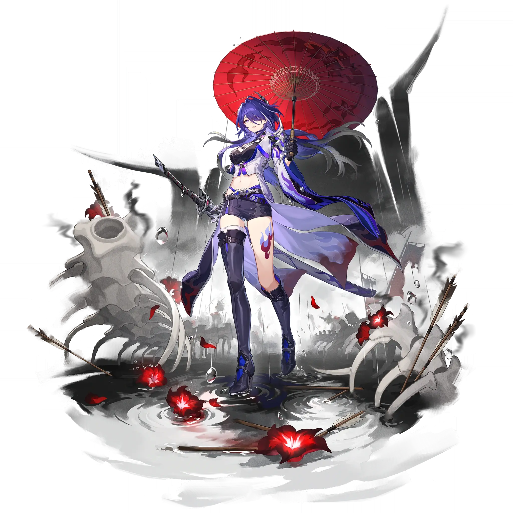

Acheron
Best Acheron build guide for Honkai Star Rail. See Acheron's best Relics, Light Cones, teams, Eidolons, Trace priority, and how to play Acheron.
🔍 Detail Skill
Semua skill aktif dan pasif beserta efeknya.
Deals Lightning DMG equal to #1[i]% of Acheron's ATK to a single target enemy.
Gains 1 point(s) of Slashed Dream. Inflicts 1 stack(s) of Crimson Knot on a single target enemy, dealing Lightning DMG equal to #1[i]% of Acheron's ATK to this target, as well as Lightning DMG equal to #2[i]% of Acheron's ATK to adjacent targets.
When Slashed Dream reaches 9 point(s), the Ultimate can be activated. During the Ultimate, reduces enemies' Toughness regardless of Weakness Types and reduces all enemies' All-Type RES by #1[i]%, lasting until the end of the Ultimate. When any unit inflicts debuffs on an enemy target while using their ability, Acheron gains 1 point of Slashed Dream and inflicts 1 stack of Crimson Knot on the targe
⚔ Light Cone Terbaik
Diurutkan dari yang paling kuat. Persentase menunjukkan performa relatif terhadap pilihan terbaik.
💎 Relic Set Terbaik
Set terbaik untuk karakter ini, diurutkan berdasarkan prioritas.
📊 Stat Utama
Stat yang dicari pada tiap slot.
👥 Tim yang Direkomendasikan
Karakter yang sering dipasangkan bersama Acheron.
 Mortenax Blade
Mortenax Blade
 Cipher
Cipher
 Welt
Welt
 Silver Wolf
Silver Wolf
 Pela
Pela
🔗 Lanjutkan
Build ini dirangkum dari Prydwen Institute. Starwise tidak menghitung sendiri. Angka bisa berubah setelah patch atau karakter baru rilis.